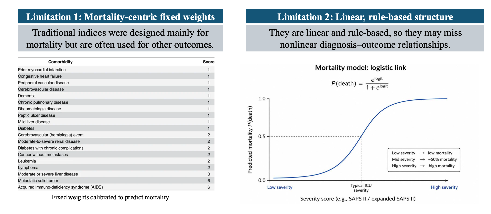
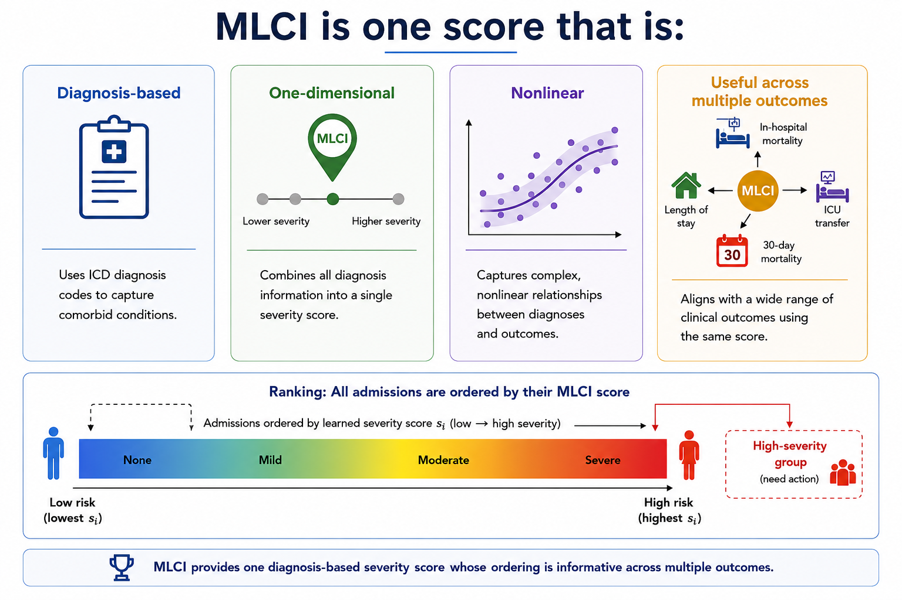
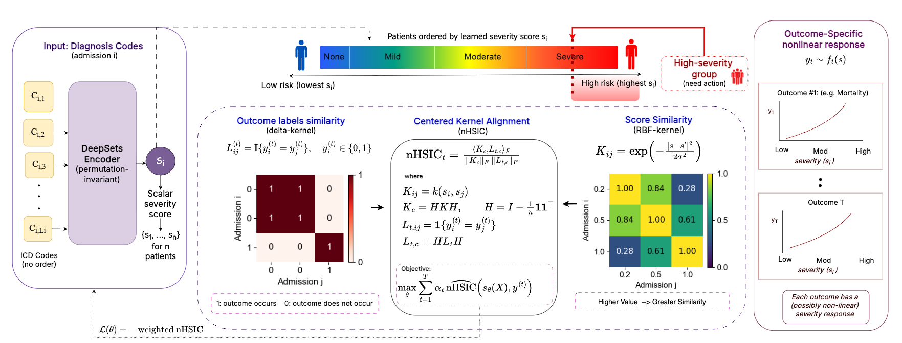
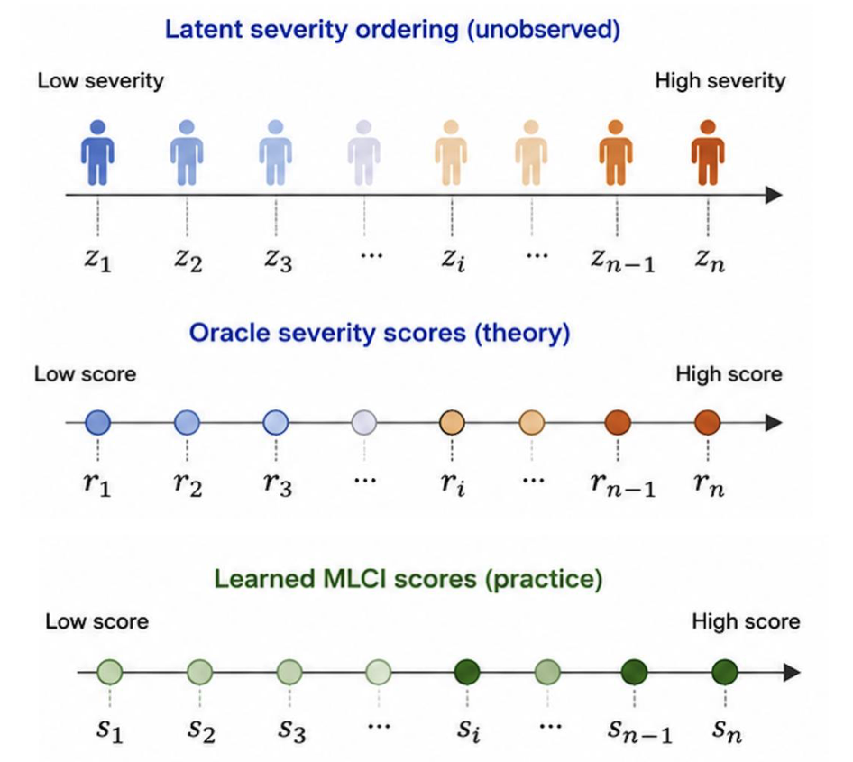
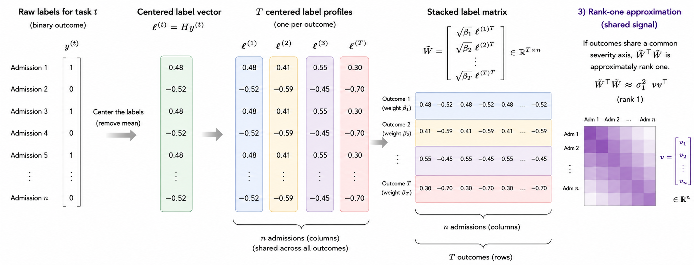
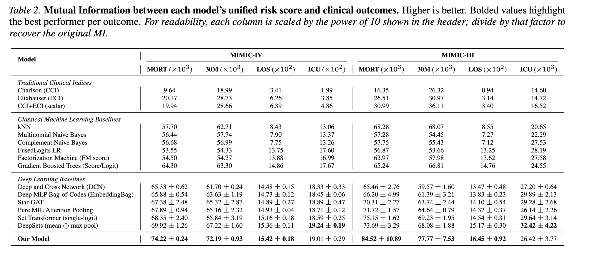
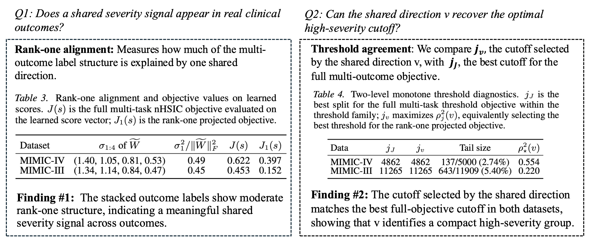

MLCI: A Machine-Learned Comorbidity Index
1Department of Computer Science, University of Iowa 2Department of Electrical and Computer Engineering, University of Iowa 3Department of Internal Medicine, University of Iowa
Abstract
Traditional comorbidity scores (e.g., Charlson and Elixhauser) are widely used for risk adjustment and patient stratification, but they have two key limitations: (i) they are largely mortality-centric and do not align well with other clinical outcomes, and (ii) their linear, rule-based structure cannot capture nonlinear, outcome-specific risk relationships. We propose a Machine-Learned Comorbidity Index (MLCI) that maps diagnosis codes to a single scalar by maximizing the normalized Hilbert–Schmidt Independence Criterion (nHSIC) between the learned score and multiple clinical outcomes. MLCI captures nonlinear risk–outcome dependence and is supported by a theory that characterizes when a unified, informative admission-level ordering can be achieved across outcomes. Empirical results on multiple benchmark electronic health record (EHR) datasets show that MLCI outperforms strong baselines across multiple evaluation metrics.
Introduction
Traditional comorbidity scores such as Charlson and Elixhauser are widely used for risk adjustment and patient stratification, but they have two key limitations.

We propose a Machine-Learned Comorbidity Index called MLCI, which maps diagnosis codes to a single scalar severity score. MLCI is trained by maximizing normalized Hilbert–Schmidt Independence Criterion across multiple clinical outcomes. This enables the learned score to capture nonlinear dependence between diagnosis-derived severity and outcomes while preserving the practical simplicity of a one-dimensional clinical index.

Experiments on MIMIC-III and MIMIC-IV show that MLCI outperforms traditional clinical indices and strong machine-learning baselines across multiple dependence metrics.
Methodology

MLCI learns a shared admission-level severity score from diagnosis codes using multi-outcome normalized HSIC.
Each hospital admission is represented as a variable-length collection of ICD diagnosis-code prefix tokens. These diagnosis tokens are passed through a permutation-invariant DeepSets-style encoder. The encoder aggregates diagnosis-code embeddings using mean and max pooling, then maps the resulting admission representation to a single scalar score.
Instead of training the score with a single binary outcome loss, MLCI maximizes a weighted sum of normalized HSIC values between the learned scalar score and multiple binary clinical outcomes. This objective encourages the learned score to capture shared outcome-relevant severity structure while allowing each outcome to have its own nonlinear relationship with severity.
Theory
The theory assumes each admission has an unobserved latent severity value \(z_i\), which orders admissions from low to high severity. The oracle severity score \(r_i\) preserves this ordering: \(z_i < z_j \Rightarrow r_i \le r_j\). Each clinical outcome depends on latent severity through its own outcome-specific response function, \(\Pr(y_i^{(t)} = 1 \mid z_i) = f_t(z_i)\). The goal is to recover a shared admission-level ordering where higher scores correspond to greater latent disease burden. In practice, \(z_i\) and \(r_i\) are unobserved, so MLCI learns \(s_i = s_\theta(X_i)\), where \(X_i\) denotes the diagnosis codes for admission \(i\), as a data-driven approximation to this oracle ordering.

To study shared structure across outcomes, we start with the binary outcome labels for each admission. For each task, we center the binary label vector and stack the centered vectors across tasks to capture how admissions behave across outcomes. From this stacked matrix, we form an admission-level alignment matrix. If this alignment matrix is approximately rank one, its leading direction represents a shared admission-level severity signal across outcomes.
Experiments
We evaluate MLCI on MIMIC-IV and MIMIC-III using four outcomes: in-hospital mortality, 30-day mortality, length of stay, and ICU transfer. We evaluate our MLCI using two statistical dependence measures, namely Distance correlation and mutual information. As for Dcorr results, MLCI learns a single scalar score that carries strong information about multiple outcomes, especially mortality and length of stay. Mutual information results show the same overall trend as distance correlation.


Strong mortality signal
MLCI achieves the strongest dependence with in-hospital mortality and 30-day mortality on both MIMIC-III and MIMIC-IV.
Better than fixed indices
MLCI outperforms Charlson and Elixhauser comorbidity indices across multiple outcomes and dependence metrics.
Single scalar score
The model preserves the usability of traditional clinical indices by producing one scalar diagnosis-based severity score.
Theory Diagnostics
We evaluate theory-motivated diagnostics to test whether the outcomes share a common admission-level severity structure. Specifically, we check whether the stacked centered outcome profiles are approximately rank one, which would indicate that a dominant shared direction explains a substantial part of the multi-outcome label structure. We also scan for a monotone threshold split along this shared direction to determine whether the theory identifies a compact high-severity subgroup across outcomes.

The results show moderate rank-one alignment on both MIMIC-IV and MIMIC-III, suggesting that the clinical outcomes contain a meaningful shared severity signal while still retaining task-specific variation. The threshold diagnostics further show that the shared direction identifies small upper-tail high-severity groups, supporting the interpretation that MLCI learns a clinically useful ordering and cutoff rather than only improving outcome-specific prediction.
Citation
@inproceedings{
baloch2026a,
title={A Machine-Learned Comorbidity Index},
author={Suleman Baloch and Kishlay Jha and Alberto Maria Segre and Philip M. Polgreen and Bijaya Adhikari},
booktitle={Forty-third International Conference on Machine Learning},
year={2026},
url={https://openreview.net/forum?id=C6ZTjSXbz7}
}